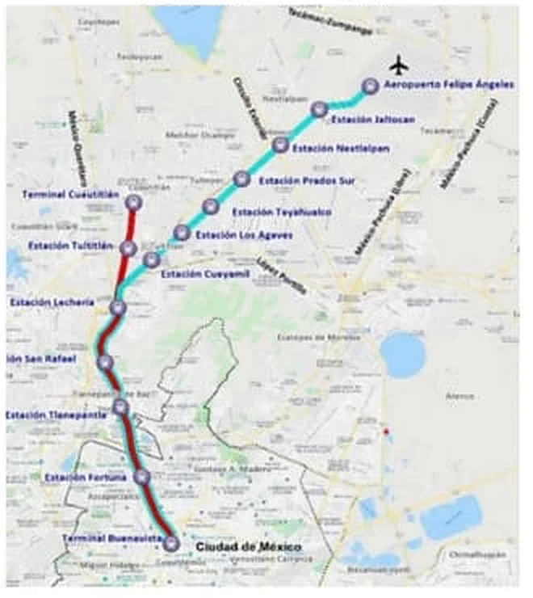
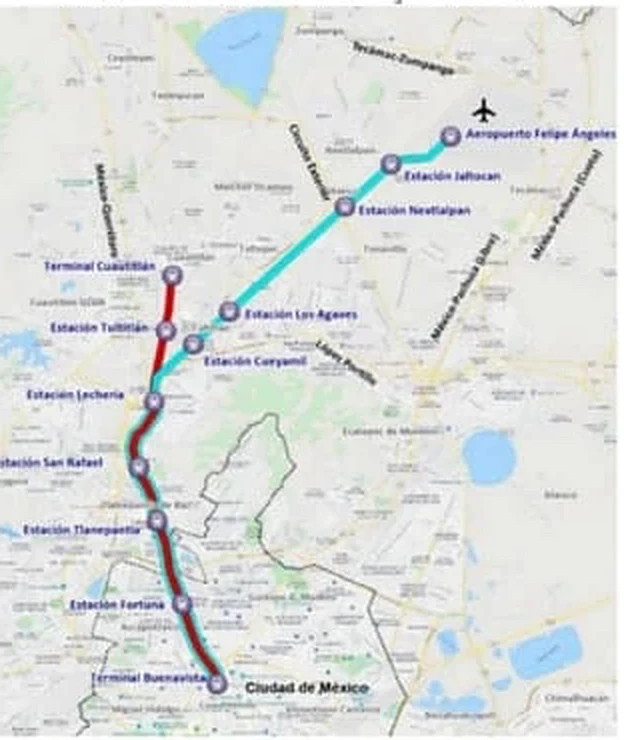
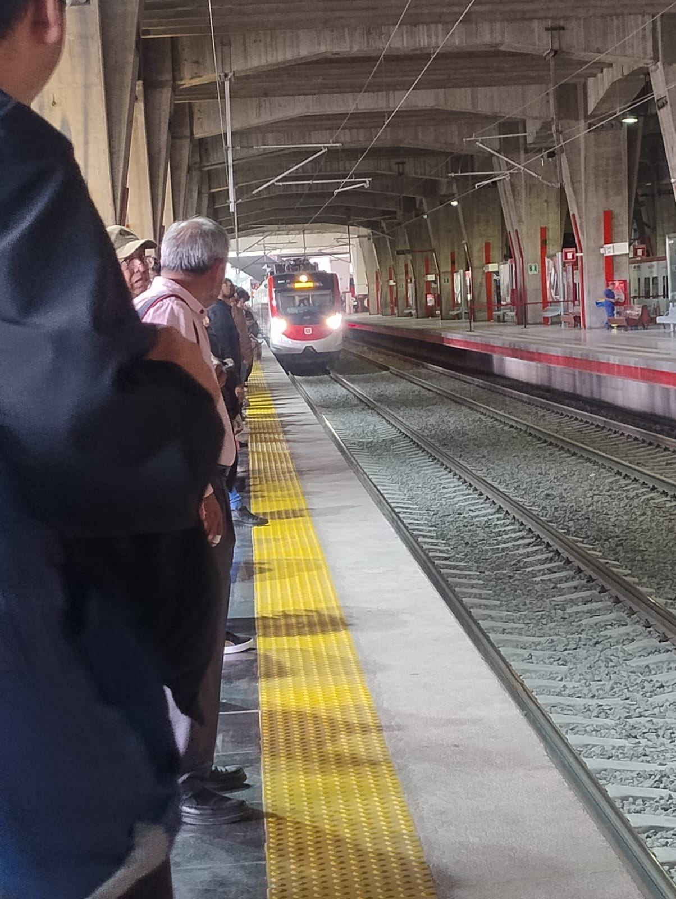
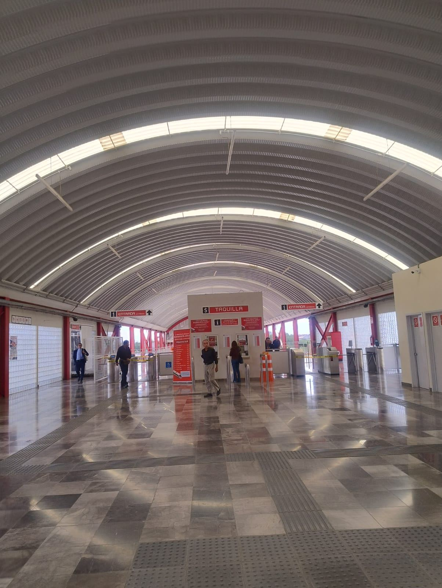
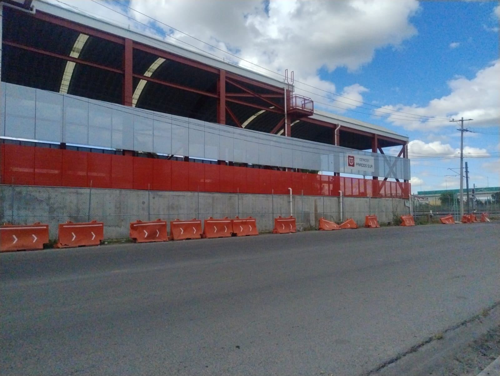
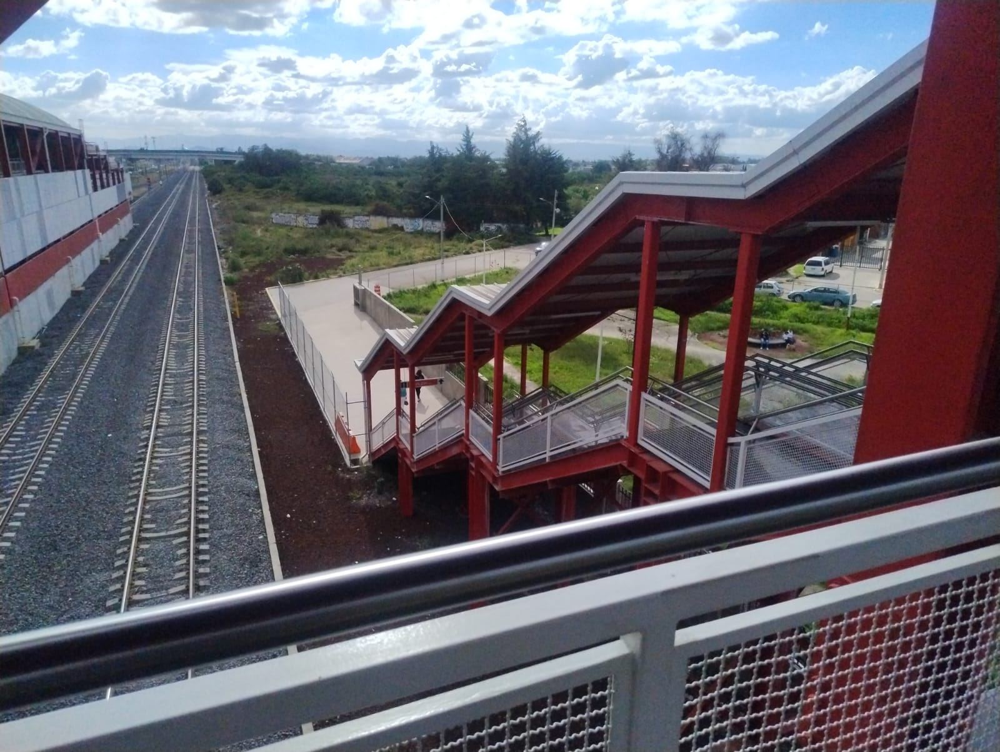
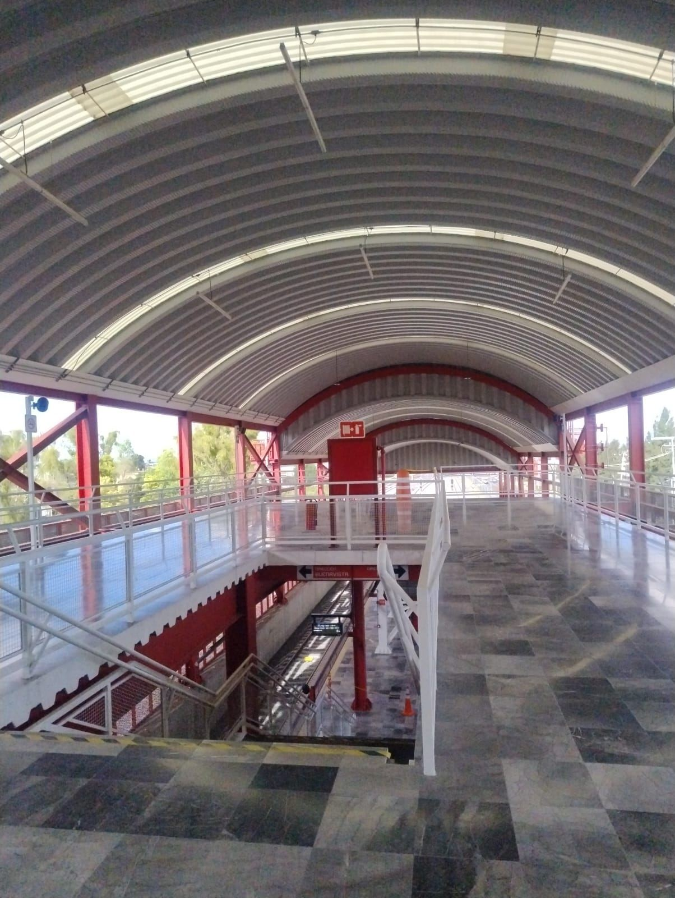
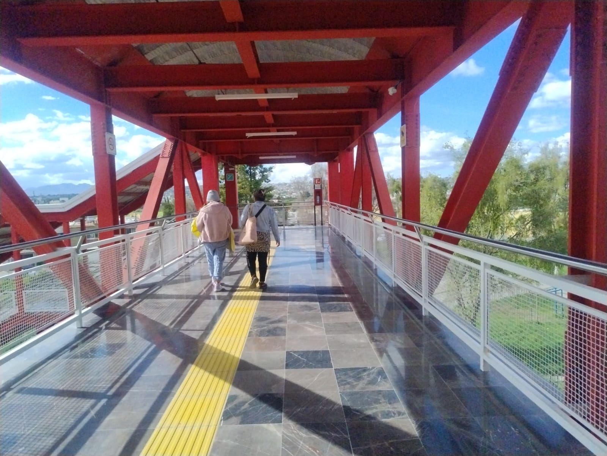

Recursos de la construcción · Equipo 7
Tren
Suburbano
Ampliación Lechería – AIFA
Proyecto de evidencia
Keila · Geovanny · Leo · Ángel
Emilio · Dani · José · Axel
Desliza o usa →
La obra en cifras
Un ramal nuevo de Lechería al aeropuerto
En operación desde el 26 de abril de 2026
Siete etapas, de la idea al primer viaje
- Presentamos el proyecto y al equipo.
- La exposición sigue las etapas del Proyecto de Evidencia: desarrollo, planeación, diseño, construcción, cuantificación, operación, mantenimiento y rehabilitación, más los materiales y equipos del Equipo 7.
- Teclas: → avanza, F pantalla completa, T reloj, N notas, V el tren.
Antes de empezar
Cinco preguntas que vas a poder responder al final
Preguntas guía
Tenlas en mente
Las respondemos a lo largo de la exposición.
- 01¿Por qué es importante la ampliación de la Línea 1 del Tren Suburbano hacia el AIFA?
- 02¿Cuáles son las principales obras que se construyeron en dicha ampliación?
- 03¿Qué impactos ambientales tuvo durante la construcción?
- 04¿Cuál fue el costo final de la realización de la obra?
- 05¿Cómo contribuyó este proyecto al desarrollo socioeconómico de la zona?
- Leer las cinco preguntas en voz alta; se responden durante la exposición (no se muestran las respuestas).
01
Desarrollo
Qué es la obra y qué necesidad resuelve.
¿Qué es?
Un tren eléctrico de pasajeros
Une la Zona Metropolitana del Valle de México con el aeropuerto Felipe Ángeles, en vía exclusiva.
- 01Gran capacidad
Mueve muchas personas sin tráfico
- 02Eléctrico
Menos emisiones y menor costo de viaje
- 03CETRAM
Cambio de transporte en cada estación
- 04Sistemas
Señalización, control, telecom y CCTV
La necesidad
Por qué había que construirlo
- 01Movilidad
Muchos viajes del norte del Edomex a la capital y al AIFA
- 02Crecimiento urbano
Tultitlán y Tultepec presionan el derecho de vía
- 03Seguridad
Cruces a nivel con el tren de carga
- Sistema ferroviario eléctrico de pasajeros que conecta la ZMVM con el AIFA.
- Mueve grandes volúmenes de personas en vía exclusiva; menos emisiones y menor costo de viaje.
- CETRAM en cada estación; señalización, control de trenes, telecomunicaciones y CCTV.
- Necesidad: alta demanda de viajes, crecimiento desordenado que presiona el derecho de vía y cruces a nivel inseguros con las vías de carga.
02
Planeación
Localización, topografía, estudios previos, impacto ambiental y cuantificación.
Localización
De Lechería al aeropuerto
23 km nuevos sobre el derecho de vía de las líneas de carga H, SH y TS, en Tultitlán, Tultepec, Nextlalpan y Zumpango.
- Lecheríainicia el ramal
- CueyamilTultitlán
- La Lomaantes Los Agaves
- TeyahualcoTultepec
- Prados SurTultitlán
- Cajigaantes Nextlalpan
- Xaltocanantes Jaltocán
- AIFAterminal
Datos generales
El tamaño de la obra
- Trazo: 23 km nuevos sobre el derecho de vía de las líneas de carga H, SH y TS.
- Municipios: Tultitlán, Tultepec, Nextlalpan y Zumpango (Edomex). Uso de suelo urbano y agrícola, sin ANP ni vegetación forestal.
- Superficie 102.67 ha; 6 + 1 estaciones; 6 CETRAM; 8 pasos superiores vehiculares; 2 viaductos; 16 puentes peatonales.
- Plazo programado 36 meses (2021–2023); abrió en abril de 2026.
- Nombres actuales: La Loma (antes Los Agaves), Cajiga (antes Nextlalpan), Xaltocan (antes Jaltocán).
Topografía
Medir antes de construir
Coordenadas UTM (WGS84, zona 14Q). El trazo va de 480 a 505 km Este.
- 01Red primaria
Monumentos cada 2–5 km con GNSS
- 02Red secundaria
Puntos cada 200–500 m con estación total
- 03Nivelación
Perfil cada 10–20 m; banco a 2,240.5 msnm
Reubicación
Primero, mover lo que ya estaba
- 01Hidráulica
Canales de riego, drenaje y agua potable
- 02Energía y datos
Redes de gas y fibra óptica
- Coordenadas UTM, datum WGS84, zona 14Q; X 480–505 km E, Y 2,165–2,185 km N.
- Red primaria cada 2–5 km con GNSS; red secundaria cada 200–500 m con poligonales cerradas y estación total.
- Nivelación: banco a ~2,240.5 msnm; perfil cada 10–20 m y secciones transversales; nivel digital y mira de invar.
- Reubicación: 31.4 km de vías de carga con desvíos provisionales y patio de maniobras nuevo (la MIA indica 31.4 km, no 75).
- Servicios a cajones de concreto, desvíos hidráulicos y ductos subterráneos reforzados.
Estudios previos
Lo que justifica la obra antes de construirla
Estudios
Doce estudios, cuatro claves
Mercado, suelos, sismo y economía decidieron el proyecto.
- 01Mercado
70,256 → 82,641 usuarios al día
- 02Mecánica de suelos
Sondeos, SPT y sustitución bajo losas
- 03Sismo
Zona B de CFE, factor 1.5
- 04Económico
Ganó 2 vías + 6 estaciones, B/C 1.83
- Localización y uso de suelo; beneficios esperados; factibilidades (25 kV, agua, drenaje, reubicación).
- Mercado: 70,256 a 82,641 usuarios/día con 6 estaciones.
- Mecánica de suelos: sondeos, SPT y sustitución bajo losas. Estructural: NTC-RCDF 2017, SAP2000 e IDEA StatiCa. Sísmico: zona B CFE, PRODISIS, factor 1.5.
- Instalaciones: catenaria, ETCS nivel 1, fibra, radio TETRA y CCTV. Vial: 8 pasos y 16 puentes. Pavimentos: terraplén al 95 %.
- Impacto ambiental: MIA regional (15EM2021V0150). Evaluación económica: tres alternativas, ganó 2V + 6 con B/C 1.83.
Impacto ambiental · Emilio
Un trazo que ya estaba impactado
Usa un derecho de vía existente: no fragmenta ecosistemas nuevos. La MIA lo declara ambientalmente viable.
Operación
100 % eléctrico: saca de la ruta autos y autobuses a diésel
Mitigación · Ángel
Cómo se redujo el daño
- 01Aire y polvo
Riego de frentes; maquinaria revisada
- 02Suelo y residuos
Almacenes protegidos; sitios autorizados
- 03Flora y fauna
Rescate y reubicación de animales
- 04Ruido
Trabajos ruidosos solo de día
- Método: redes de causa-efecto entre fases y aire, suelo, agua, flora, fauna y medio social.
- Construcción: 346 t/año de CO, 442 t/año de NOx; 577 kg/día de residuos del personal.
- Veredicto: ambientalmente viable; impactos temporales y mitigables, beneficios por 30 años.
- Vigilancia ambiental: bitácora, medición de aire y ruido, revisión de residuos e informes a la autoridad.
Planeación · Cuantificación · Axel
El tamaño del proyecto
Explosión de insumos · Dani
Lo que pide la vía
Estimación del equipo para 23 km de doble vía; no son cantidades oficiales.
- 01Riel RE 115
46 km × 2 rieles × 57 kg/m ≈ 5,250 t
- 02Durmientes de concreto
uno cada 0.60 m ≈ 76,700 piezas
- 03Grapas elásticas
4 por durmiente ≈ 306,700 piezas
- 04Balasto
≈ 1.7 m³ por metro ≈ 78,000 m³
Costos de cada alternativa · José
Inversión y operación
Costos sin IVA con los que se compararon las tres opciones.
- 011 vía + 4 estaciones
Inversión $10,832 M · operación $283 M al año
- 022 vías + 4 estaciones
Inversión $11,719 M · operación $294 M al año
- 032 vías + 6 estaciones
Inversión $12,556 M · operación $332 M al año
Electrificación y obras complementarias · Axel
25,000 voltios por un hilo de cobre
Catenaria con sustentador e hilo de contacto sobre postes HEB; ETCS nivel 1, fibra óptica, radio TETRA y CCTV.
- 01Laderos de rebase
6 de 500 m
- 02Viaductos y pasos
2 viaductos · 8 pasos vehiculares
- 03Puentes peatonales
16, con rampas de accesibilidad
- 04Confinamiento
Mallas de protección y CETRAM en cada estación
- Axel: tamaño del proyecto — 23 km de vía electrificada en Tultitlán, Tultepec, Nextlalpan y Zumpango; 1,026,661.09 m² (102.67 ha); 6 estaciones + terminal AIFA; inversión > $10,832 M; 36 meses; vida útil 30 años.
- Dani: Riel: 46 km × 2 × 57 kg/m ≈ 5,250 t. Durmientes cada 0.60 m ≈ 76,700. Grapas 4 por durmiente ≈ 306,700.
- Balasto ≈ 1.7 m³/m ≈ 78,000 m³. Hilo de contacto 46 km × 120 mm² ≈ 49 t. Postes HEB cada ~50 m ≈ 920.
- José: inversión y operación anual sin IVA — 1V+4: $10,832,153,788 y $282,934,394; 2V+4: $11,718,690,084 y $294,351,000; 2V+6: $12,556,285,514 y $332,254,715.
- Axel: catenaria aérea a 25 kV con cable sustentador e hilo de contacto sobre postes HEB; ETCS N1, fibra óptica, radio TETRA y CCTV. Obras complementarias: reubicación de 31.4 km de vías de carga, 6 laderos de 500 m, 2 viaductos, 8 pasos vehiculares, 16 puentes peatonales, CETRAM y mallas de confinamiento.
03
Diseño
Especificaciones de la estación tipo y de la vía.
Estación tipo
Más de 200 m de andén
Seis estaciones diseñadas por PROES con metodología BIM.
- 01Cimentación
Losa de 0.65 m sobre el terreno
- 02Muros laterales
0.50 m: cargan pilares y frenan descarrilamientos
- 03Andén central
8 m (Xaltocan 12 m); vías a 15 m
Arcotecho
Acero rojo, sin estructura intermedia
- 01Vestíbulo elevado
113 m sobre emparrillado metálico
- 02Losa colaborante
12 cm
- 03Sismo
Zona B · factor 1.5 · 2 juntas
- Seis estaciones de más de 200 m, diseñadas por PROES con BIM.
- Losa de cimentación de 0.65 m; muros laterales de 0.50 m que cargan pilares y frenan descarrilamientos.
- Andén central de 8 m (Xaltocan 12 m); vías a 15 m entre ejes.
- Vestíbulo elevado de 113 m sobre emparrillado metálico y losa colaborante de 12 cm.
- Arcotecho sin estructura de soporte, acero pintado de rojo; zona sísmica B, factor 1.5; dos juntas de dilatación.
Vía férrea
Capa por capa
Cada capa reparte la carga del tren a la siguiente.
- 01Terraplén
Compactado al 95 %
- 02Subbalasto
Capa granular de transición
- 03Balasto
Roca triturada que drena y amortigua
- 04Durmientes
Concreto, uno cada 0.60 m
- 05Riel RE 115
≈ 57 kg/m con grapas elásticas
Especificaciones
Vía continua y soldada
- Terraplén al 95 %, subbalasto, balasto de roca triturada, durmientes de concreto con grapas elásticas.
- Ancho de 1,435 mm. RE = Railway Engineering (AREMA), 115 lb/yd ≈ 57 kg/m. Soldadura aluminotérmica: vía continua.
- Viaductos de 1,140 m y 2,320 m; cajón de ~3,100 m de SEDENA para entrar al AIFA; puente sobre el canal de desagüe para 4 vías.
El riel · Dani
Perfil RE 115
Acero laminado en caliente. Cada parte del perfil tiene un trabajo.
- 01Cabeza
Superficie de rodadura donde apoya la rueda
- 02Alma
Lleva la carga vertical hacia abajo
- 03Patín
Reparte la carga sobre la placa y el durmiente
Datos del riel
Pesado, recto y continuo
Se suelda en barras largas (aluminotérmica) para que la vía no tenga juntas.
- RE = Railway Engineering (AREMA); 115 lb/yd ≈ 57 kg/m.
- Altura ≈ 168 mm; patín ≈ 140 mm; cabeza ≈ 69 mm; alma ≈ 16 mm.
- Se fija al durmiente de concreto con placa y grapa elástica; soldadura aluminotérmica: vía continua.
Equipo · Dani
La extendedora de asfalto
Recibe la mezcla caliente, la reparte a todo lo ancho y la deja lisa y precompactada.
- 01Tolva
Recibe la mezcla del camión de volteo
- 02Cintas y sinfines
La llevan hacia atrás y la reparten a lo ancho
- 03Plancha vibratoria
Da espesor y pendiente; precompacta hasta 80 %
Datos
Detrás va el compactador
Los rodillos compactan antes de que la mezcla baje de 110 °C.
- Flujo: tolva → cintas → sinfines → plancha vibratoria (precompacta hasta 80 %, con sensores láser o ultrasónicos).
- Orugas (más empuje) o neumáticos (hasta 20 km/h). Mini 1–5 t, urbana 7–12 t (2.5–6 m), carretera > 14 t (hasta 16 m).
- Renta urbana $2,500–3,200/h con operador; compra $8.8–14.8 M. El compactador tándem cierra antes de 110 °C.
04
Construcción
Proceso, programa de obra, normas y presupuesto.
Proceso constructivo
De los estudios al primer viaje
- 1TrazoGNSS y estación total
- 2Reubicaciónvías y servicios
- 3Terraceríasdespalme y terraplén
- 4Víabalasto, durmiente, riel
- 5Estacionesconcreto y acero
- 6Catenaria25 kV y ETCS
- 7Pruebas21 dic 2025
Programa de obra
Se planeó en 3 años; tomó casi 5
- 1 Trazo y control topográfico · 2 Reubicación de vías y servicios · 3 Terracerías y drenaje · 4 Superestructura de vía · 5 Estaciones, pasos y viaductos · 6 Electrificación y sistemas · 7 Pruebas (21 dic 2025) y apertura (26 abr 2026).
- Empresas: Ferrocarriles Suburbanos (CAF), Rubau, PROES, Cupisa/Azvi; SEDENA concluyó la obra.
Presupuesto · evaluación socioeconómica
Ganó la alternativa más cara
Con 6 estaciones la demanda sube de 70,256 a 82,641 usuarios al día y eso paga la inversión extra.
- 011 vía + 4 estaciones
VPN $8,315 M · B/C 1.58
- 022 vías + 4 estaciones
VPN $7,518 M · B/C 1.50
- 032 vías + 6 estaciones ✓
VPN $13,144 M · TIR 17.3 % · TRI 16.15 % · B/C 1.83
Costo final
Casi el doble de lo estimado
Suspensiones, inconformidades de comunidades y retrasos de las empresas; el Gobierno Federal tomó el control.
- Inversión sin IVA: $10,832 M (1V+4), $11,719 M (2V+4), $12,556 M (2V+6). TIR 17.3 %, TRI 16.15 %.
- Presupuesto original $14,388 M; costo final > $25,800 M por suspensiones, inconformidades y retrasos; SEDENA tomó el control.
- Catálogo de conceptos: despalme, terraplén, subbalasto, balasto, durmiente, riel, soldadura, catenaria, concreto y acero estructural.
Alternativas de solución · José
Tres trazos comparados


Inversión sin IVA · obra (pesos)
| Componente | 2V + 6 est. ✓ | 2V + 4 est. | 1V + 4 est. |
|---|---|---|---|
| Infraestructura y vía | $3,911,403,126 | $3,893,395,699 | $3,552,354,622 |
| Estaciones y talleres | $1,365,050,662 | $1,019,466,788 | $943,254,157 |
| Señalización y telecomunicaciones | $2,081,183,967 | $1,983,937,747 | $1,849,788,216 |
| Reubicación de vías de carga | $826,095,264 | $823,708,118 | $775,663,978 |
| Pasos a desnivel y peatonales | $551,466,513 | $551,466,513 | $551,466,513 |
| Reubicación del patio de maniobras | $432,557,195 | $432,557,195 | $432,557,195 |
| Adecuaciones viales | $757,178,281 | $559,089,140 | $559,089,140 |
Inversión sin IVA · terrenos y gestión (pesos)
| Componente | 2V + 6 est. ✓ | 2V + 4 est. | 1V + 4 est. |
|---|---|---|---|
| Terrenos | $709,000,000 | $537,000,000 | $537,000,000 |
| Costos legales | $145,330,170 | $142,992,697 | $124,202,895 |
| Seguros y fianzas | $424,177,250 | $424,177,250 | $327,426,000 |
| Proyecto ejecutivo | $429,430,975 | $428,426,123 | $326,510,000 |
| Supervisión | $125,000,000 | $125,000,000 | $100,000,000 |
| Integrador operativo | $185,000,000 | $185,000,000 | $142,788,120 |
| Certificación | $125,000,000 | $125,000,000 | $125,000,000 |
| Gerencia integral | $488,412,113 | $487,472,814 | $485,052,953 |
| Total de inversión | $12,556,285,514 | $11,718,690,084 | $10,832,153,788 |
Costos de operación anuales sin IVA (pesos)
| Componente | 2V + 6 est. ✓ | 2V + 4 est. | 1V + 4 est. |
|---|---|---|---|
| Energía eléctrica (alta tensión) | 25,717,537 | 25,718,000 | 25,717,537 |
| Personal del servicio ferroviario | 49,310,400 | 38,469,000 | 38,469,300 |
| Costo de tarjetas | 6,975,194 | 6,975,000 | 6,975,194 |
| Subtotal de operación | 82,003,131 | 71,162,000 | 71,162,031 |
| Subtotal indirectos y generales | 250,251,584 | 223,189,000 | 211,772,363 |
| Total de costos al año | 332,254,715 | 294,351,000 | 282,934,394 |
Costos indirectos y generales anuales (pesos)
| Componente | 2V + 6 est. ✓ | 2V + 4 est. | 1V + 4 est. |
|---|---|---|---|
| Fiduciario | 1,850,580 | 1,851,000 | 1,850,580 |
| Derechos por concesión | 4,714,117 | 4,714,000 | 4,714,117 |
| Vigilancia | 16,598,400 | 12,348,000 | 12,348,000 |
| Energía eléctrica · estaciones | 3,431,459 | 2,451,000 | 2,451,042 |
| Personal | 10,065,108 | 9,873,000 | 9,814,768 |
| Limpieza | 3,677,372 | 3,677,000 | 3,677,372 |
| Seguros y fianzas | 62,382,877 | 44,559,000 | 44,559,198 |
| Costos directos de mantenimiento | 110,255,412 | 108,417,000 | 100,711,748 |
| Materiales para mantenimiento | 25,112,324 | 25,112,000 | 21,459,372 |
| Gastos generales | 1,629,534 | 1,558,000 | 1,557,534 |
| Traslado de valores | 9,201,334 | 7,296,000 | 7,295,565 |
| Honorarios | 795,050 | 795,000 | 795,050 |
| Derechos por consumo de agua | 538,017 | 538,000 | 538,017 |
| Subtotal | 250,251,584 | 223,189,000 | 211,772,363 |
Indicadores de rentabilidad (pesos de 2020)
| Indicador | 2V + 6 est. ✓ | 2V + 4 est. | 1V + 4 est. |
|---|---|---|---|
| Demanda diaria (usuarios) | 82,641 | 70,256 | 70,256 |
| Valor presente de los costos | $15,764,640,261 | $15,016,981,763 | $14,219,868,357 |
| Valor presente de los beneficios | $28,908,812,221 | $22,535,820,990 | $22,535,820,990 |
| Valor presente neto (VPN) | $13,144,171,960 | $7,518,839,226 | $8,315,952,633 |
| Tasa interna de retorno (TIR) | 17.30 % | 14.63 % | 15.39 % |
| Tasa de rentabilidad inmediata (TRI) | 16.15 % | 13.06 % | 14.00 % |
| Relación beneficio / costo | 1.83 | 1.50 | 1.58 |
- Mapas: 2V+6 agrega Nextlalpan (hoy Cajiga) y Prados Sur; 2V+4 y 1V+4 comparten trazo con 4 estaciones.
- Inversión total sin IVA: 2V+6 $12,556,285,514 · 2V+4 $11,718,690,084 · 1V+4 $10,832,153,788.
- Operación anual: 2V+6 $332,254,715 · 2V+4 $294,351,000 · 1V+4 $282,934,394.
- Ganó 2V+6: VPN $13,144 M, TIR 17.30 %, TRI 16.15 %, B/C 1.83, demanda 82,641 usuarios al día.
- El valor presente de costos de 1V+4 (tapado en la captura) se obtiene de beneficios − VPN = $14,219,868,357.
Normatividad
Normas Oficiales Mexicanas de SEMARNAT
Las ocho que aplican a la obra, en el orden de la votación del equipo.
- 01NOM-052 · Residuos peligrosos
Pintura, solventes y aceites a contenedores especiales y empresas autorizadas. — Keila
- 02NOM-054 · Incompatibilidad de residuos
Qué residuos peligrosos no pueden almacenarse juntos. — Geovanny
- 03NOM-041 · Emisiones · gasolina
Camionetas y vehículos ligeros afinados y verificados. — Leo
- 04NOM-045 · Opacidad · diésel
Humo de la maquinaria pesada y los camiones de volteo. — Emilio
Normatividad
…y las cuatro restantes
Diseño: NTC-RCDF 2017 y Manual de Obras Civiles de CFE.
- 01NOM-050 · Emisiones · gas
Equipos y vehículos a gas LP o natural. — Ángel
- 02NOM-080 · Ruido de vehículos
Escapes en buen estado; trabajos ruidosos de día. — Axel
- 03NOM-059 · Especies en riesgo
Revisión del trazo; rescate y reubicación de fauna. — Dani
- 04NOM-113 · Subestaciones eléctricas
Protección ambiental de las que alimentan los 25 kV. — José
- NOM-052: Residuos peligrosos. Pintura, solventes y aceites a contenedores especiales y empresas autorizadas.
- NOM-054: Incompatibilidad de residuos. Qué residuos peligrosos no pueden almacenarse juntos.
- NOM-041: Emisiones · gasolina. Camionetas y vehículos ligeros afinados y verificados.
- NOM-045: Opacidad · diésel. Humo de la maquinaria pesada y los camiones de volteo.
- NOM-050: Emisiones · gas. Equipos y vehículos a gas LP o natural.
- NOM-080: Ruido de vehículos. Escapes en buen estado; trabajos ruidosos de día.
- NOM-059: Especies en riesgo. Revisión del trazo; rescate y reubicación de fauna.
- NOM-113: Subestaciones eléctricas. Protección ambiental de las que alimentan los 25 kV.
- En la MIA la 059 y la 113 están cruzadas y la 045 aparece como de gasolina (es de diésel); aquí van corregidas.
05
Operación
Puesta en marcha, mantenimiento y rehabilitación.
El tren
CAF Civity · 22 m por coche
Unidad eléctrica de cinco coches a 25 kV de corriente alterna.
Despiece
Cómo se arma un coche
- 01Techo
Clima, aisladores y pantógrafo
- 02Caja
Aluminio, cabina y puertas dobles
- 03Bastidor
Equipos de tracción y frenos
- 04Bogies
Ruedas, discos y suspensión neumática
A bordo
Pensado para viajar parado o sentado
- 01Asientos 2 + 2
Enfrentados, con pasillo continuo
- 02Tubos y pasamanos
Acero inoxidable
- 03Información
Pantallas con la próxima estación
- 04Accesibilidad
Puertas a nivel de andén
- Coche cabina de una unidad eléctrica CAF Civity, de unos 22 m; velocidad de diseño 130 km/h, media de operación 65 km/h.
- Despiece: techo (clima, aisladores, pantógrafo), caja de aluminio con cabina y puertas, bastidor con equipos de tracción, dos bogies con ruedas, frenos de disco y suspensión neumática.
- Interior: asientos 2 + 2, tubos de acero inoxidable, LED, pantallas, piso antiderrapante.






Visita del equipo · Prados Sur
Así funciona hoy
Vestíbulo con arcotecho, fachada perforada, pasarela al CETRAM y doble vía.
Operación
Horario y servicio
- Fotos de la visita del equipo a Prados Sur.
- Horario 05:00–24:00 entre semana; trenes cada 15–30 min; tarifa promocional de $45 al AIFA.
06
Mantenimiento y rehabilitación
Cómo se conserva la obra y cómo se recupera ante fenómenos naturales.
Mantenimiento · Geovanny
Predictivo, preventivo y correctivo
- 01Vía
Amolado, bateadora e inspección ultrasónica
- 02Energía y señales
Desgaste del hilo y termografía
- 03Trenes
Torneado de ruedas; revisiones A, B y gran revisión
- 04Control
UPS, servidores y anillos de fibra
Rehabilitación · Leo
Lo que la naturaleza le hace a la obra
Inspección → evaluación → reparación → reapertura con pruebas.
- 01Sismo
Revisar viaductos, juntas y apoyos
- 02Hundimiento
Suelos lacustres: renivelar vía
- 03Inundación
Canal de desagüe y drenaje pluvial
- 04Tormentas
Pararrayos y tierras de cobre
- Vía: amolado, bateadora, engrase de cambios, ultrasonido. Energía: desgaste del hilo, termografía, balizas ETCS. Trenes: torneado de ruedas, revisión diaria de pantógrafos y frenos. Control: UPS, generadores, fibra.
- Sismo: zona B, estaciones grupo A2 factor 1.5. Hundimiento: antiguo lago de Xaltocan. Inundación: canal de desagüe. Tormentas: pararrayos, tierras de cobre, aisladores.
07
Materiales
Acero, cobre, tabique, ladrillo, adoquín, asfalto y extendedora.
01 / 07 · Axel
Acero
Rieles, columnas del arcotecho, postes HEB y varilla de losas.
- 01Tipos
A36 / A572 · varilla G42
- 02Riel
RE 115 ≈ 57 kg/m
- 03Norma
NMX-B-506
02 / 07 · José
Cobre
Hilo de contacto que toca el pantógrafo, cableado de señales y tierras.
- 01Conductividad
≈ 100 % IACS
- 02Hilo
107–150 mm²
- 03Tubería
tipos K, L y M
03 / 07 · Keila
Tabique rojo
Pieza maciza de arcilla cocida; muros confinados de los locales técnicos.
- 01Medida
7 × 14 × 28 cm
- 02Uso
muros de carga
- 03Norma
NMX-C-404
04 / 07 · Geovanny
Ladrillo
Extruido y cocido en planta: hueco, más ligero y mejor aislante.
- 01Ventaja
menos peso
- 02Uso
muros de servicios
- 03Norma
NMX-C-404 / 036
05 / 07 · Ángel
Adoquín
Pavimento articulado de concreto sobre cama de arena, confinado con guarniciones.
- 01Espesor
6, 8 y 10 cm
- 02Resistencia
350–450 kg/cm²
- 03Norma
NMX-C-314
06 / 07 · Emilio
Asfalto
Cemento asfáltico mezclado en caliente para pasos vehiculares y accesos.
- 01Tendido
140–160 °C
- 02Compactar
antes de 110 °C
- 03Grado
PG 64-22
07 / 07 · Dani
Extendedora
Recibe la mezcla, la reparte a lo ancho y la precompacta con su plancha.
- 01Flujo
tolva → sinfines → plancha
- 02Urbana
7–12 t · 2.5–6 m
- 03Renta
$2,500–3,200 / h
- Tabique: arcilla cocida, 7 × 14 × 28 cm, NMX-C-404. Ladrillo: extruido, hueco, más ligero. Adoquín: 6–10 cm, 350–450 kg/cm², NMX-C-314.
- Acero: A36/A572 y varilla G42 (NMX-B-506). Cobre: ≈100 % IACS, hilo 107–150 mm². Asfalto: 140–160 °C, compactar antes de 110 °C.
- Extendedora (Dani): tolva → cintas → sinfines → plancha vibratoria (hasta 80 % de compactación); urbana 7–12 t; renta $2,500–3,200/h; compra $8.8–14.8 M.
Conclusión
No es solo teoría
En el corredor del AIFA hubo que hacer muros de contención en lugar de taludes: no había espacio junto a los carriles. Todo es presupuesto.
Rúbrica
Lo que cubrimos
- 01Desarrollo
Qué es y qué necesidad resuelve
- 02Planeación
Estudios previos y cuantificación con explosión de insumos
- 03Diseño y construcción
Programa, catálogo, presupuesto y normatividad
- 04Operación, mantenimiento y rehabilitación
Incluye fenómenos naturales
- 05Materiales y equipos
Los siete del Equipo 7
Gracias
Equipo 7 · Tren Suburbano Buenavista → AIFA
- Fuentes: MIA SEMARNAT 15EM2021V0150; Gandía et al. (PROES), ACHE 2025; Wikipedia (25 oct 2026); DOF NOM-052, 054, 041, 045, 050, 080, 059 y 113; NMX-C-404, NMX-C-314, NMX-B-506; fichas Vögele, Caterpillar, Dynapac, Volvo; tabulador CMIC 2026; visita a Prados Sur.
- Imágenes 3D renderizadas por el equipo en Blender (Cycles).